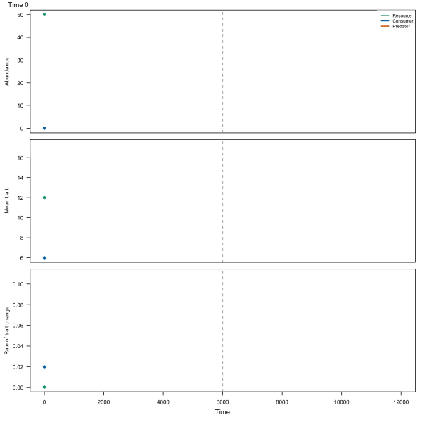

Simulates the joint dynamics of abundances and mean traits of a basal resource (R), a
consumer (N) and a predator (P), the three-trophic-level model of chapter 3 of McPeek
(2017). Each level has one quantitative trait whose mean changes at a rate proportional to
the selection gradient, the slope of the logarithm of mean fitness against the trait at the
mean (equation 3.7, after Lande 1982 and Iwasa et al. 1991 as cited there):
\(d\bar z_i / dt = V_i \, \partial \ln W_i / \partial z_i\), where \(V_i\) is the
additive genetic variance. Abundances follow the per capita growth rates of equations 3.9
and 3.20: logistic growth of the resource, Holling type II feeding by the consumer on the
resource and by the predator on the consumer and, with omnivory = TRUE, on the resource
too, with density-dependent death at every level. The intrinsic rates are quadratic in the
traits and the attack coefficients take one of the three forms of food_web_params().
Usage
food_web_dynamics(
times,
init = c(R = 50, N = 0.1, P = 0),
traits = c(R = 10, N = 4, P = 1),
params = food_web_params(),
attack = c("gaussian", "logistic", "michaelis"),
V = c(R = 0.2, N = 0.2, P = 0.2),
omnivory = FALSE,
introductions = NULL,
dt = 0.1,
extinction = 1e-06,
trait_floor = NULL
)Arguments
- times
Times at which to return the state, increasing; the run starts at the first.
- init
Abundances at the first time, or at introduction for the levels in
introductions, namedR,NandPor in that order. Zero means absent.- traits
Mean traits at the first time, or at introduction, in the same order.
- params
Parameters from
food_web_params().- attack
Form of the attack coefficients:
"gaussian","logistic"or"michaelis"; seefood_web_params().- V
Additive genetic variances of the three traits, one number or three; zero means a trait that does not evolve.
- omnivory
Does the predator also feed on the resource (intraguild predation, with
v0,wanduofparams)?- introductions
Optional named numbers: the times at which levels
NorP(orR) appear, after the first time. Until then they are absent whateverinitsays.- dt
Step of the integration; the intervals between the times of
timesand ofintroductionsare divided into steps no longer than this.- extinction
Abundance below which a level is set to zero; McPeek's code has no such threshold, so use 0 to compare with it.
- trait_floor
Lowest value of the mean traits: a trait that falls below it relaxes back at rate
trait_floor - z.NULLuses 0 withattack = "michaelis", where traits must be positive, and no floor (-Inf) otherwise. McPeek's MATLAB code floors every trait at 0.
Value
A data frame of class food_web with one row per time in times and columns
time; the abundances R, N, P; the mean traits z_R, z_N, z_P; the selection
gradients grad_R, grad_N, grad_P (\(\partial \ln W / \partial z\) at the mean, so
that V * grad is \(d\bar z / dt\)); the rates of trait change rate_R, rate_N,
rate_P (\(|d\bar z / dt|\)); and the realized attack coefficients a_RN, m_NP and
v_RP. The parameters, the attack form, V, omnivory and introductions are kept as
attributes.
Details
The fitness of an individual with phenotype z is evaluated with every other individual at
the mean trait (equations 3.8 and 3.20): the satiation of a consumer depends on its own
trait, so the trait of an individual enters both the numerator and the denominator of the
functional responses of the links where it feeds, but only the numerator of the links where
it is eaten. Selection gradients are central differences of this fitness with respect to
z at the mean, so the three attack forms share one implementation. Abundances and means
are integrated together by a fourth-order Runge-Kutta method with a fixed step dt, which
must be short against the fastest rate of the system (about a tenth of \(1 / c_0\)
or less):
halving dt should leave the result unchanged, and a run whose state stops being finite
or whose abundances overshoot below zero stops with an error.
A level with abundance zero is absent: its trait is held and its rate of change is zero.
Levels can be added during the run with introductions, to follow the burst of evolution
after an invasion and its deceleration towards equilibrium (figures 3.2 and 3.3 of the
book), and to compare the trait of the resource with and without the predator (figure
3.11). Abundances that fall below extinction are set to zero. plot.food_web() draws
the trajectories and animate_food_web() turns them into a GIF, such as this one, in which
a consumer invades the resource and a predator arrives at time 6000 (parameters of the
Gaussian panel of figure 3.11, made by data-raw/food_web_gif.R):

Two details of equation 3.20 are read as follows. Its loss term of the resource to the
predator carries the conversion efficiency w, which the matching selection gradient of
the resource, the consumer's loss term and equation 3.9 do not; the implementation leaves
w out of the losses of prey, as in the other equations. The attack coefficient of the
predator on the consumer is written there with the trait of the resource; it is taken as a
function of the traits of the consumer and the predator, as box 3.1 defines it; with
this reading the three-level panel A of figure 3.11 is reproduced closely.
For the resource and the consumer, the implementation matches the MATLAB code of the
resource-consumer models that McPeek (2017, The American Naturalist) published as
supplementary material: the same fitness functions, functional responses and selection
gradients, and trajectories of figure 2 of that article (figure 3.2 of the book) within
1e-4 of the author's ode45 integration in continuous time, where one "iteration" of the
book is one unit of time. That code floors the mean traits at zero (trait_floor) and has
no extinction threshold. It has no predator, so the predator level rests on the equations
of the book alone.
References
McPeek, M. A. (2017). Evolutionary Community Ecology. Princeton University Press. doi:10.23943/princeton/9780691088778.001.0001
McPeek, M. A. (2017). The ecological dynamics of natural selection: traits and the coevolution of community structure. The American Naturalist, 189, E91–E117. doi:10.1086/691101
See also
food_web_params(); plot.food_web() and animate_food_web() to draw the
results; trait_rates() for rates that vary among branches of a tree.
Other coevolution in food webs:
animate_food_web(),
food_web_params(),
plot.food_web()
Examples
# a consumer invades a resource at its demographic and evolutionary equilibrium
# (figure 3.2 of McPeek 2017)
x <- food_web_dynamics(seq(0, 3000, by = 50), init = c(R = 50, N = 0.1, P = 0),
traits = c(R = 10, N = 4, P = 1), dt = 0.5)
x[c(1, 5, 11, 61), c("time", "R", "N", "z_R", "z_N", "rate_R", "rate_N")]
#> time R N z_R z_N rate_R rate_N
#> 1 0 50.00000 0.100000 10.00000 4.00000 2.033599e-04 0.0090910335
#> 2 200 40.04674 7.982604 11.53796 5.78318 1.643165e-02 0.0072946640
#> 3 500 43.22094 4.123618 13.49491 8.05137 6.900882e-03 0.0073569762
#> 4 3000 33.57991 3.261716 17.11113 15.57262 9.414057e-05 0.0002169003
# the predator arrives later
y <- food_web_dynamics(seq(0, 4000, by = 50), init = c(R = 50, N = 0.1, P = 0.1),
traits = c(R = 10, N = 4, P = 6), introductions = c(P = 2000),
dt = 0.5)
tail(y, 1)[, c("R", "N", "P", "z_R", "z_N", "z_P")]
#> R N P z_R z_N z_P
#> 1 33.81239 3.204191 0 17.16969 15.53966 5.863439